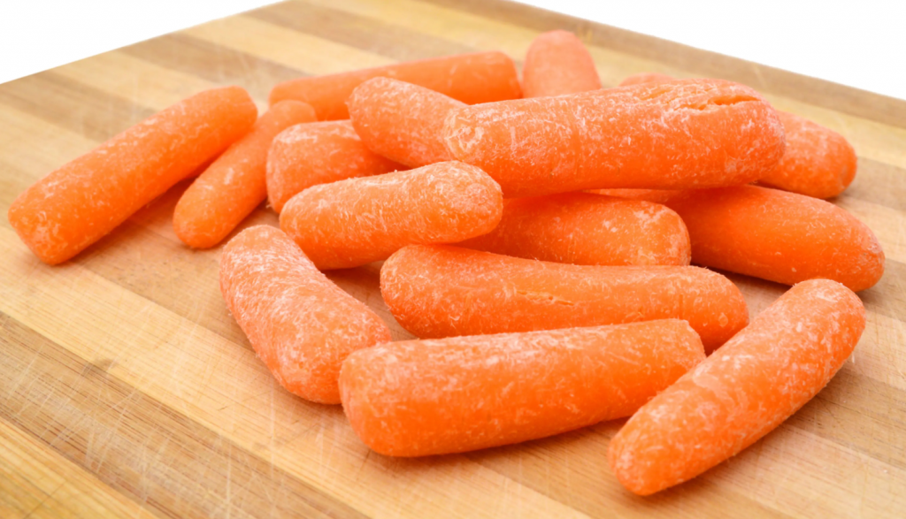

Carrots.
If you folowed my instant pot pot roast recipe than you will have leftover carrots. This is because I listed them in the ingredients and then didn't tell you what to do with them. They should have gone in with the Roast, but now they are getting dry out on your counter. So I will help you turn these dry boring leftover carrots into something you can serve and eat at any time.

ingredients :
step by step instructions :
- put the carrots on the plate.
- sit down in a chair.
- make sure there is nothing in your mouth (you may have to swallow or spit something out, depending)
- eat the carrots.
thank you :)
-p